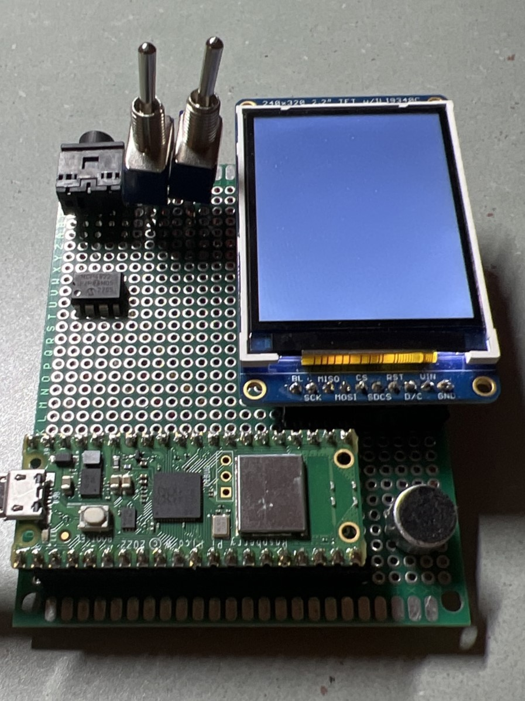
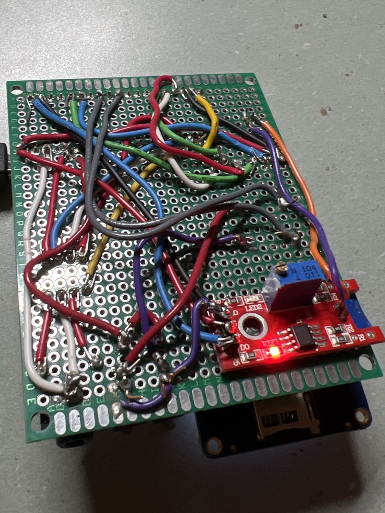

Introduction
We used a Pico W to host a webserver with hardware peripherals at home which would allow housemates to receive or send alerts to each other from their mobile devices.
Our goal was first to use the Pico W to connect to the internet and host a webserver we could connect from our personal devices. We added layers of complexity as we went, based on what we were interested in implementing and what would be a positive addition to the Alert Center. We first wanted to use the webpage to control an output device, so we implemented a TFT display on which we could display messages entered through the webpage. We then wanted to try communicating from pico to personal device, so we added a sound sensor and displayed a red square on the webpage when a loud sound was detected. We also added two switches (one for each housemate) that each housemate would toggle to indicate whether or not they are home, this state would also be displayed on the webpage. Our last task was implementing audio. We used DDS to synthesize sounds that could be selected from the remote webpage and played at home.
Design
High Level
Our project can be broken down into 4 major components. The hardware peripherals, the micropython code, the C modules, and the webpage.
The part of the Alert Center that remains at home consisted of all the hardware. The Pico W and the peripherals were soldered onto a protoboard. A TFT display was used to display messages sent from the webpage. We had a switch assigned to each housemate to represent their state (switch 1 in position 1: housemate 1 is home, switch 1 in position 2: housemate 1 is not home) which was displayed on the webpage. A sound sensor was used to detect if there was a fire alarm or other loud noise. Finally, a DAC, audio socket, and speaker were used to play audio.
We used micropython to host the webpage as the documentation for it was much better compared to the documentation for C. This choice made the internet connectivity aspect of our project much simpler as we had a good guide to follow. The Thonny IDE was used as our development environment to run the micropython code, open a serial connection, and store files on the Pico W. The TFT display library, the html page, TFT font files, and the main.py python program were stored locally on the Pico W. The main.py python file contained the logic for connecting to the internet, launching the webpage, and handling the events triggered by the hardware peripherals or the webpage.
The html webpage served as the remote user interface for the system. We styled it using CSS and included some JS elements for functionality.
C code was used to perform direct digital synthesis (DDS) since micropython cannot complete the computations and write to the DAC quickly enough. We also already had most of the code written for this from lab 1, so we had some boiler plate already. We experienced great difficulty with calling native C functions from micropython, but eventually we established communication between the C and micropython code bases.
Hardware
The hardware of the project includes a Raspberry Pi Pico W, ILI9340 TFT Display, 2 on-on toggle switches, KY-037 sound sensor, MCP4822 DAC, and an audio socket mounted onto a protoboard. Speakers are connected to the audio socket.
Our project started off on a breadboard, once we tested each individual component's functionality, we soldered them onto a protoboard. This made the system more sturdy and serve its purpose of being a Home Alert Center as it could be safely mounted somewhere in the house.
The Pico W was chosen for our microcontroller board as it included the Infineon CYW43439 chip providing it with WiFi connectivity.
The TFT Display communicated with the Pico W via SPI. We referenced the Adafruit webpage about this display to understand pin functions. The VBUS pin from the Pico W was used to provide the display with 5V.
The center pin of each toggle switch was connected to a GPIO pin on the Pico W. Each of the other two pins were tied to ground and 3V3. So when the switch was flipped one way, the input to the Pico W was high, and low the other way.
The sound sensor was connected to a Pico W GPIO pin. The mic was also removed from the module and placed in a more practical location on the protoboard. The module had a potentiometer which allowed us to tune its sensitivity. If there was a noise louder than the set threshold, the input to a particular GPIO pin on the Pico W was high.
A 12-bit Digital-to-Analog Converter (DAC) was used to convert the digital signals synthesized using DDS to analog signals. The DAC communicates with the Pico W over SPI. The outputs of the DAC are sent to an audio socket which is connected to a speaker to output audio.
Micropython Software
During power up, the micropython firmware installed on the Pico W runs the main.py file automatically. The python file connects the Pico W to WiFi and deploys the webpage. It also handles subsequent events triggered by the hardware peripherals or the webpage.
In main.py, we first initialized the TFT object, pins, and variables, and we read the html file to a string variable. We then connected to an available WiFi network, heavily using the code from the Pico W datasheet. The Pico W has an inbuilt network library that was utilized. Functions from the library were used to assign the network, ensure that it is active, connect to it using the given name and password, and then wait for a fixed timeout duration to connect. If the connection was not successful, we would run the code again. We could not completely figure out why the Pico W sometimes had difficulty connecting but we did notice that it happened far less frequently on faster WiFi networks. If the connection was successful, we could access the Pico W assigned local IP address (192.168.1.X).
We used an open source library for the TFT display. We changed the number of bytes written in each SPI write so that the graphics would display faster. Given the limited storage space that the Pico W has, we also cut down the library and kept only the functions we were using. Additionally, there were a few bugs in the library that we fixed. If a word was too long to be displayed on the screen, it would initially get cut off. We updated this error so that the word will get split up and displayed on different lines. We noticed that when we reset the cursor to the origin, the origin was not always in the same location and was rather based on the previous command. We began to fix this but realized that it is only a problem if there is more text than can fit on the screen, since we want ours to function as a message board, all the text should be seen so we put a cap on the length of text entered in the webpage.
The socket library (also distributed with micropython) was used to create web sockets. We wrote logic in micropython to listen for HTTP connection requests on the local IP address and port 80. Under the hood, web browsers send servers HTTP GET requests when interacting with webpages. The html directs the browser to different URL’s so that the Pico W receives an HTTP request when the page is first opened, refreshed, or one of the buttons is pressed. By parsing the origin field of the HTTP header, the Pico W responds with the corresponding event handler.
The webpage has three buttons: submit, audio, check in. Submit is used to send a text message to the TFT display, audio is used to play audio, and the check in button is used to see who's home and the state of the alarm. Each of these buttons were a link to 192.168.1.X/?”button name”. So the url of the page would change accordingly. So in the get request, we could search to see if “button name” was present and we would know whether the button was pressed.
If the submit button was pressed, there was also some javascript in the html file that set the url to include the text that was entered in the textbox. Some string processing and ASCII decoding was done to the GET request to get a clean copy of the text which was then displayed on the TFT.
If the check in button was pressed, the value of the two housemate switches and sound sensor were read. If the sensor pin was high, we display text “Alarm on” and a red square on the webpage, and ”Alarm off” with a green square otherwise. This is done by using .replace() on the html string. For example, html.replace("Alarm Off","Alarm On"). Next, if the switch states have changed, the color that each name is displayed in is changed, green if home, red if not. This update was also done using the string replace function. This part of the project was not ideal as we wanted the webpage to update live without the need for any action from the user, however, we are only able to send anything to the server after we receive something as HTTP is unidirectional communication. Only once a request is received, a response is sent. We did not realize this when we began trying to implement the feature so we tried many different options. Our most significant idea was to use interrupts, we checked for a change in level of the switches and updated the html file in the ISR. When we tested this solution we realized that the html file was getting updated immediately but it still was not getting displayed until there was a user request from the webpage. We assumed that the code was just running in a continuous loop but we added print statements throughout the file and noticed that it was stalling right after the call to receive an HTTP request. We tried making that call timeout so that we could move forward but that did not work either. At this point we did more research to understand HTTP and realized how HTTP functions. We then tried to alter the page so that it automatically sent a request every few seconds to give the illusion of live updates, but given the very slow WiFi speeds we were experiencing, we realized that this was not an elegant or sustainable solution.
If the audio button was pressed, we made a call to examplemodule.c to run DDS and write to the DAC.
C Audio Code
We synthesized an alarm noise which acts as a bell in the alert system. To synthesize our audio, we used DDS. The DDS class webpage and example code were heavily used. We modified the provided DDS code to output tones at 1400 Hz. A 1000 cycle beep was played 680 cycles apart 5 times, and then repeated after a 15000 cycle pause. This was done by setting the DDS phase incrementer to (1400 * 232)/40000. 232 was used as 32 bits were used to represent the phasor angle. The DDS algorithm would first enter the interrupt service routine (ISR), increment the phasor angle by the incrementer, use the sine lookup table to send the amplitude at that angle to the DAC every 1/40000 s. A finite state machine was set up to determine whether a beep or a pause should be playing and for how long. We cut the audio off after 5 seconds.
Calling C from micropython
There are two general approaches to calling C code from the micropython layer of a rp2 board. The static approach is to compile and link micropython with an external C module, and flash it to the board. The dynamic link approach is to register your module interface with the micropython interpreter (this involves building and flashing the interpreter once) and importing a native .mpy file from the micropython file directory that matches the registered interface. The dynamic link approach means you don’t have to recompile the entire interpreter everytime you want to edit your external C file. More information can be found here.
We spent 20+ hours on both approaches and were able to get the static approach working and almost got the dynamic approach to work. We will write more detailed instructions in the hope that it may help a poor soul in the future.
We cloned the micropython repo, and found a useful examplemodule.c in micropython/examples/usercmodule/cexample. The examplemodule.c file distributed with the micropython repo has an example showing how to wrap C primitives into python objects and the macros to register your C function with the python namespace. The default build automation seems to compile and link the examplemodule.c when building the interpreter.
The example_module_globals_table defines the module interface. You must register anything you wish to be accessible from micropython here.
Include statements like /#include "pico/stdlib.h" should just work because the micropython repo includes a pico-sdk folder.
- cd ~/micropython/ports/rp2
- make BOARD=PICO_W submodules
- make BOARD=PICO_W clean
- make BOARD=PICO_W
- cd ~/micropython/ports/rp2/build-PICO_W
drag and drop firmware.uf2 to the Pico-W
Congrats! Your custom module can be imported through the micropython interface with import cexample.
We were able to compile and link the micropython interpreter itself with the DDS code. There is also a dynamic link approach where a C file can be compiled to a .mpy file and put into the python file system. We now have an updated html string that we need to display so it is sent using the opened socket and then the socket is closed. Compile to a native machine code file and let the python interpreter dynamically include it
Results
Our project was successfully able to develop an IoT node and facilitate two-way communication between the hardware peripherals and webpage. The performance of the system was highly dependent on the WiFi network we were using. When using home WiFi, which is fast and stable, the updates on both sides (page and peripherals) were essentially instantaneous. When using a slow hotspot (which we had to do on campus because we were not able to connect to campus networks) the system was extremely slow and updates would take several seconds to appear. This, however, meant that the issue was not with our design. The only place we saw a slight drop in speed was when writing to the TFT display. Since we are using micropython, it is visibly slow. We embraced this speed and displayed just one word at a time making it seem like the slow speed was a stylistic choice.
We realized when we were testing our final product that the sound sensor was not very reliable and after a few seconds it would build a tolerance to the sound level and not detect sound at the same volume anymore. We had to constantly change the sensitivity level of the potentiometer. This makes this part of the system essentially unusable but it can be easily rectified using a higher quality sensor.
The project in its current state is not very practical as both users (home and remote) have to be connected to the same WiFi network, which means the system can only be used at home. We do know that it is possible to host users on other networks and make this project more practical.
Conclusion
The results of our project mostly met our expectations and we were happy with our final product. Our initial goal was to connect to the web with the Pico W and then see how much complexity we could add on. We wanted to implement two way communication (Pico W to web, web to Pico W), and add as many peripherals as needed to make it a well-equipped Alert Center. We wanted to run logic written in both C and micropython to enable further extensibility. We were successful in completing all of these goals.
The one task we were not able to complete was being able to connect to the Pico W from anywhere in the world. Currently, we can only access the webpage if we are on the same LAN as the Pico W. We are not too upset about this, however, since the work involved more troubleshooting than engineering. We spent some time registering the Pico W MAC address with Cornell IT, but the RedRover network would fail to allocate an IP address to the Pico W. It is something that we hope to implement in the future as it will allow us to actually use it as a Home Alert Center.
If we could do anything differently we would have had a clearer goal to start off with and done more research. Since we were adding complexity as we went along, we encountered obstacles that could have been avoided if we had planned ahead. For example, had we known that we wanted to have live updates on the webpage, we could have used something other than HTTP requests.
Intellectual Property Considerations
All software we use in our source code is open source.
We used an open source library for the TFT display which we slightly modified to better suit our needs. We used the code on the Pico W datasheet as a starting point to host the webpage. Our code from lab 1 was used for audio synthesis which included example code from class.
Micropython is licensed under the MIT license.
The pico-sdk is licensed under the BSD-3 clause.
Appendices
Appendix A : Permissions
The group approves this report for inclusion on the course website. The group approves the video for inclusion on the course YouTube channel.
Appendix B : Code
Appendix C : Hardware Design
 Hardware Block Diagram
Hardware Block Diagram
Protoboard Top
Protoboard Bottom
Appendix D : Bill of Materials
| Name | Cost |
|---|---|
| Raspberry Pi Pico W | $11.87 |
| MCP 4822 DAC | $3.59 |
| SJ1-3553NG Audio Socket | $0.76 |
| Speakers | $14.99 |
| AUX cables | $4.35 |
| TFT Display | $13.20 |
| Switch (2) | $2.21 |
| KY-037 Sound Sensor | $2.87 |
| Protoboard | $4.50 |